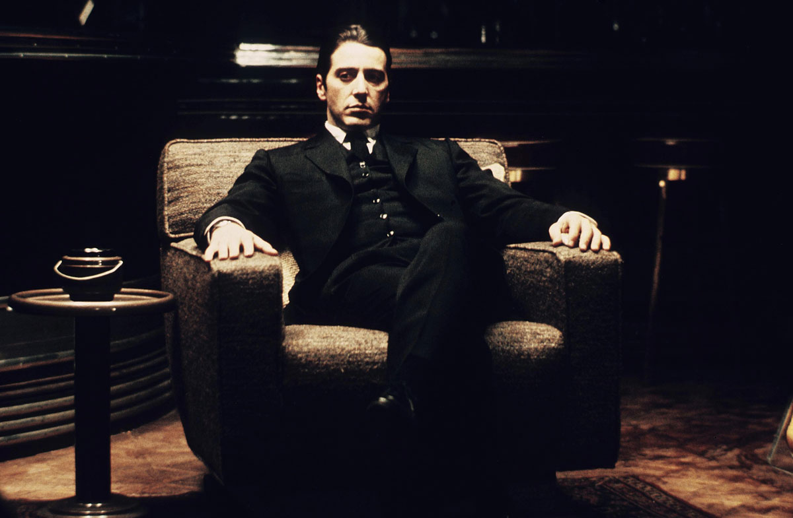

The Godfather
我最爱的电影

Great people are not born with the great, but in the process of growing up show its great.
电影信息
- 教父1-1972年上映，IMDB'TOP2,评分9.2
- 教父2-1974年上映,IMDB'TOP3，评分9.0
- 教父3-1990年上映，IMDB评分7.6
- 维托·柯里昂-由艾尔·帕西诺饰演
- 迈克尔·柯里昂-由马龙·白兰度饰演
《教父》一片一直广获全球影评的赞赏以及大众公认的影史经典，被认为可能是史上最棒的电影。美国影评网站烂番茄根据84篇评论得出99%的新鲜度。《娱乐周刊》的投票中，《教父》同样被认为是影史最棒的影片。《教父》目前还是AFI百年百大系列最新版本的亚军，仅次于《公民凯恩》后[14]，最初的版本则为季军，位于《北非谍影》后。而在2008年6月，AFI又票选了美国影史10种类型电影的前10名，《教父》一片经由1500名以上的成员票选后，成为帮派类型电影的冠军[15]。
Don’t hate your enemy, or you will make wrong judgment.Michael Corleone
Great people are not born with the great, but in the process of growing up show its great.111